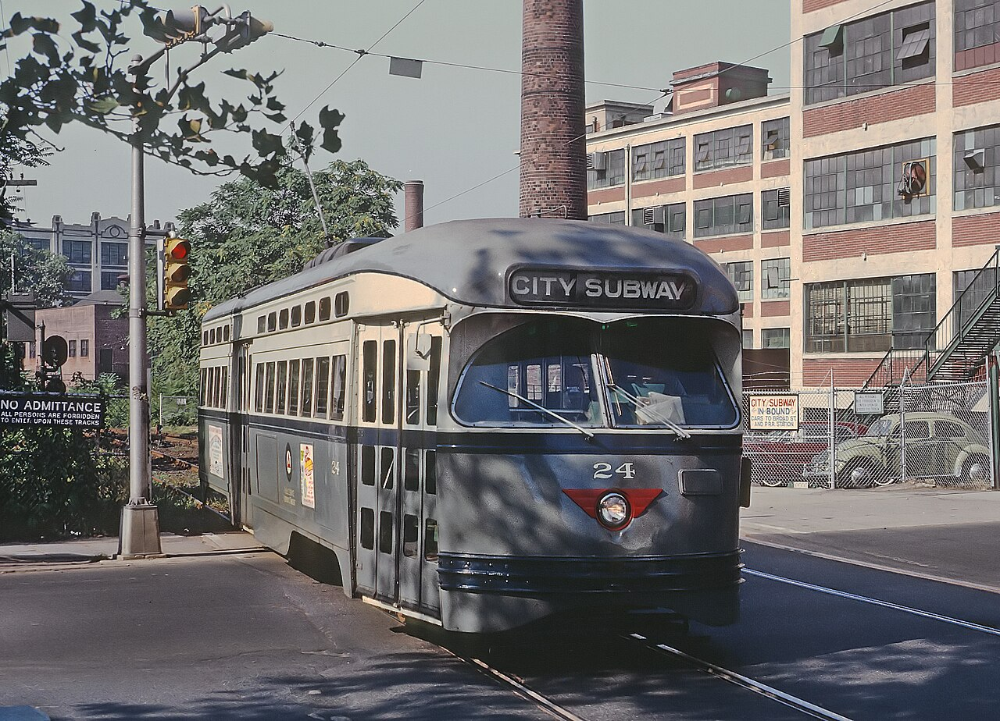
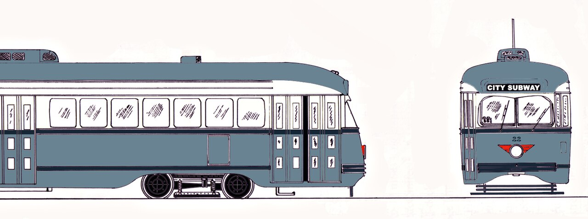
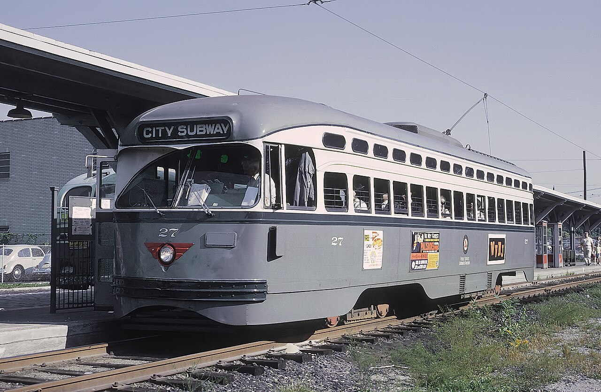

Secondhand Modernity from Minneapolis–St. Paul

By the early 1950s, the original heavyweight streetcars operating on Route #7 were aging rapidly. Rather than abandoning Newark's subway trench, Public Service Coordinated Transport looked west to Minneapolis–St. Paul, where Twin City Rapid Transit (TCRT) was abruptly dismantling its modern streetcar network.
Between 1952 and 1954, Public Service purchased 30 relatively new PCC (Presidents' Conference Committee) streetcars built by the St. Louis Car Company. Renumbered #1 through #30, the streamlined single-ended cars completely took over City Subway operations in 1954. Because the subway already featured turnaround loops at Newark Penn Station and Franklin Avenue, single-ended operation suited the line seamlessly.
Signature Livery & Everyday Dependability
Designed in the 1930s by an industry-wide engineering committee to match the acceleration and quiet ride of automobiles, PCC cars featured resilient rubber-sandwiched wheels, smooth electric drum acceleration, and streamlined bodies. In Newark, they initially wore Public Service's signature grey, white, and blue paint scheme before later carrying Transport of New Jersey (TNJ) and NJ Transit colors after state takeover.

From Public Service to NJ Transit & Final Run (2001)
Even as Newark transformed around it—surviving urban highway construction, suburbanization, and the 1980 creation of NJ Transit—the PCC fleet kept running at rapid headways down the Branch Brook Park cut. Dedicated shop crews at Franklin Avenue kept the 1940s-era cars mechanically spotless for decades after most American cities had scrapped their streetcar fleets.
Only the arrival of accessible, higher-capacity, low-floor light rail vehicles finally brought the era to a close. On August 24, 2001, thousands of commuters and transit historians turned out for the final revenue run of Newark's PCC cars—closing a remarkable 47-year chapter in American streetcar history. Several Newark cars were preserved at railway museums and heritage streetcar lines across the country.
